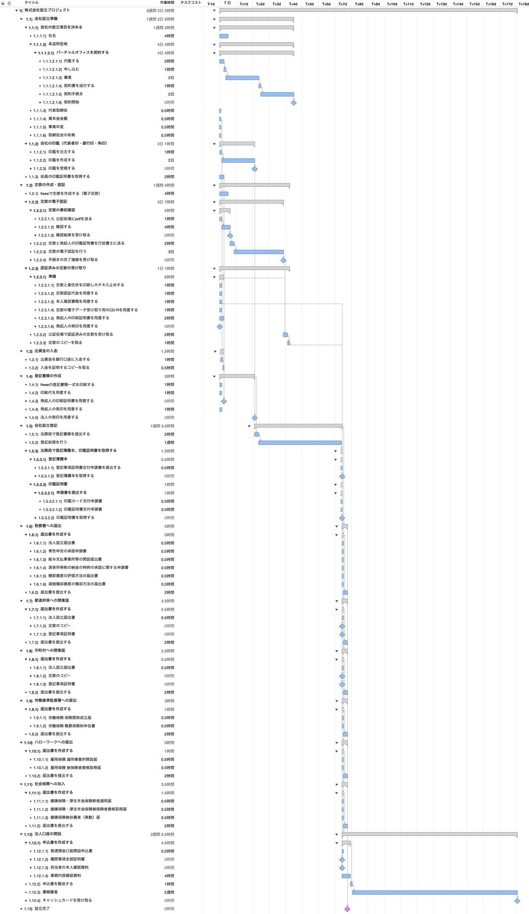
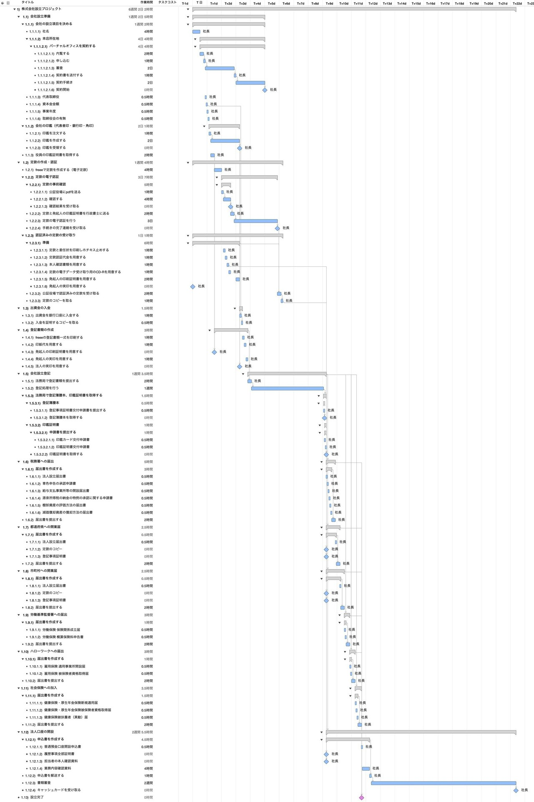
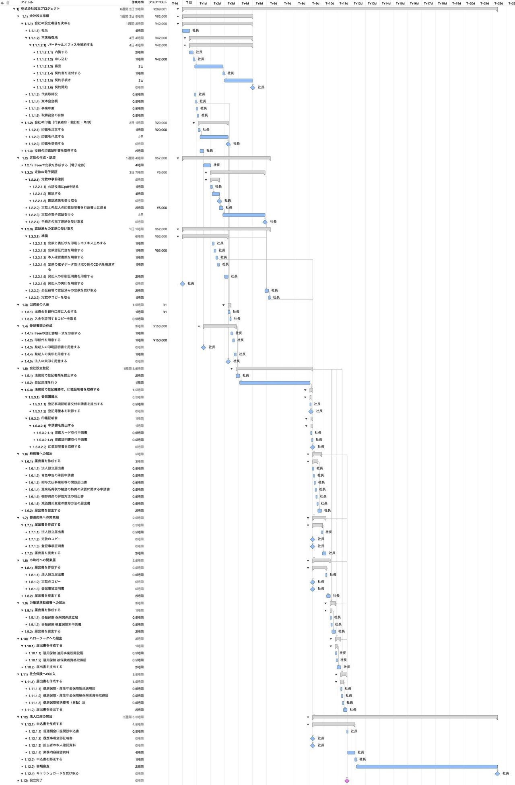

株式会社を設立するWBSを作ってみた
今回は「WBSで覗いてみた」として、私が株式会社ライトイールドを設立した際の経験を振り返りながら「株式会社を設立するWBS」をご紹介します。役所手続きや法人口座開設など、会社設立に必要な全作業の洗い出しから、1人で作業した場合の工期の変化、実際にかかるリアルな費用まで、WBSを通じて詳しく検証していきます。
※そもそも「WBSとは何か？」について詳しく知りたい方は、こちらの記事「WBSの勘所」も合わせてご覧ください。
1. 株式会社設立プロジェクトのWBSを作る
会社設立の手続きは専門用語も多く、自力ですべて行うには敷居が高い作業ですが、クラウドサービスを活用することでスムーズに進めることができます。今回は以下の記事を参考に、定款や登記書類の作成に「freee会社設立」を利用した前提でWBSを作成しました。
会社設立freeeを使って会社を設立してみた（LIGブログ）
作成した会社設立プロジェクトのWBSがこちらです。

改めて見ても作業量が多いことが分かります。支援サービスを活用してもこのボリュームですから、事前の計画がいかに重要かが実感できます。プロジェクトの工期は全体で17日。ただし、これは法人口座の開設に日数を要しているためであり、実質的には7日で登記手続きが完了となります。「1週間で会社が設立できる」という表現も、最短スケジュールとしては妥当なラインと言えます。
2. 全ての作業を社長がやってみる
続けて、すべての作業を発起人である社長1人が担当した場合をシミュレーションしてみました。ガントチャートの「平準化」を行い、作業の重複を解消して1人体制の現実的なスケジュールを算出します。

平準化を行った結果、17日だった全体の工期が21日まで延伸しました。登記手続きにかかる工期も7日から11日へ延びています。
一般的な解説記事などで見かける「○日でできる」という表現は、多くの場合「複数人で手分けして最短並行作業を行った場合の理論値」です。1人で全作業を担当する場合、当然ながらタスクが直列化するため、予想以上に期間が必要となります。あらかじめ「1人で進めるなら20日前後はかかる」と把握しておくことで、無理のない現実的なスケジュールを立てることができます。
3. 各タスクにかかる費用を計上する
会社を設立する際には、登録免許税や定款認証手数料など、各工程で様々な法定費用や諸経費が発生します。そこで今回は、作業にかかるコストも一緒にWBS上で管理・可視化してみました。

WBSによる試算では、会社の資本金を1円とした場合の総額は269,001円となりました。ここには交通費や証明書の発行手数料、印鑑作成代などは含めていないため、実際にはもう少し費用がかかります。資本金以外にも初期費用として相応の準備が必要であることが分かります。
終わりに
いかがでしたでしょうか。WBSは作業の分解だけでなく、担当者の割り当て（リソース平準化）やコストの掛け合わせを行うことで、プロジェクトの見通しを劇的に向上させることができるツールです。
「自分1人で進めるとどれくらい期間が延びるのか」「総額でいくら必要なのか」といった疑問も、WBSで構造化してシミュレーションすることで事前に正確に把握できます。
今回の記事が、これから起業を考えている方やプロジェクトの計画づくりに悩む皆さんにとっての気付きになれば幸いです。また、プロジェクト計画の基礎となるWBSの作り方や平準化の考え方については、「WBSの勘所」や「ガントチャートの決め手は平準化」もぜひ合わせてご覧ください。
最後までお読みいただきありがとうございました。